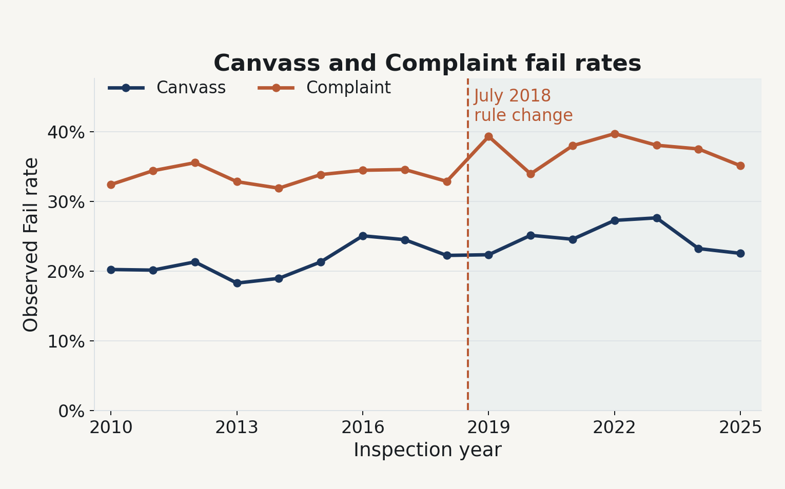
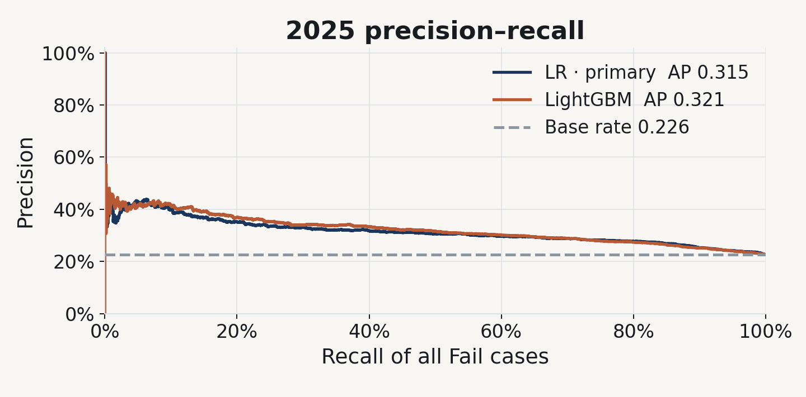
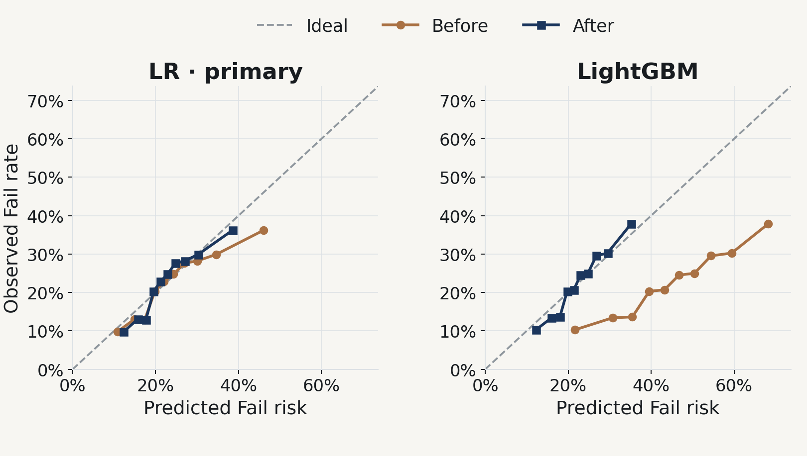
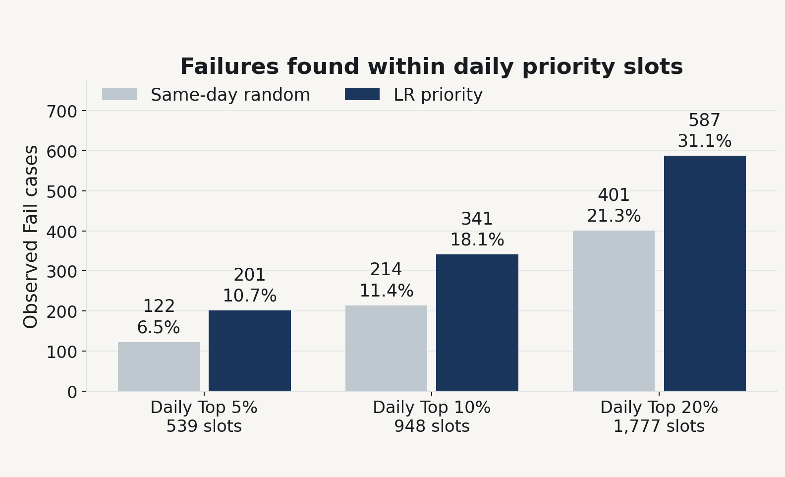
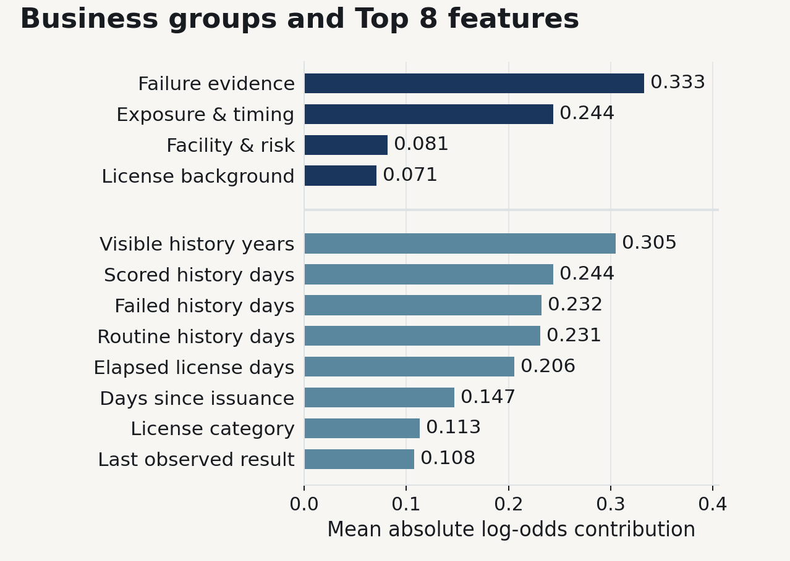
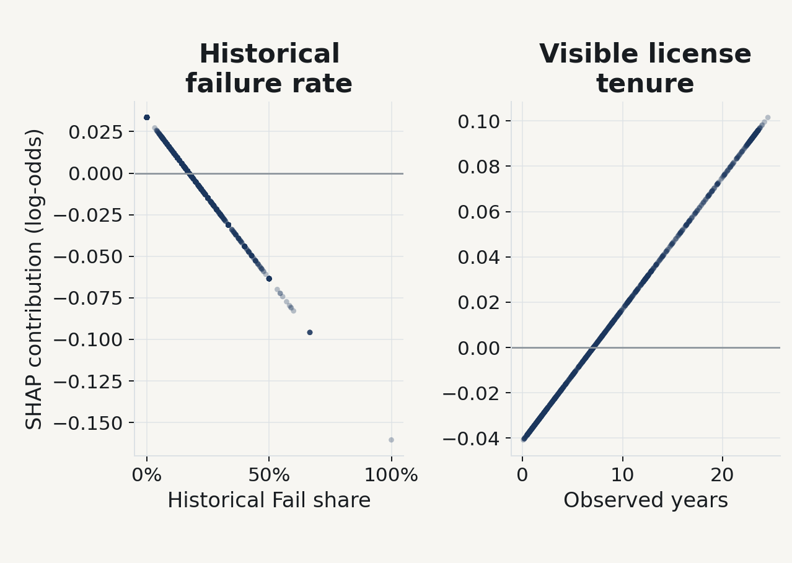
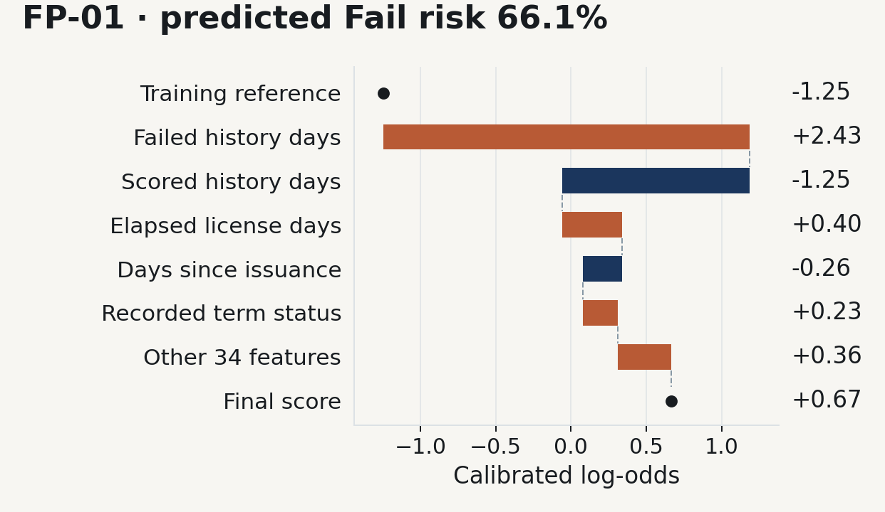
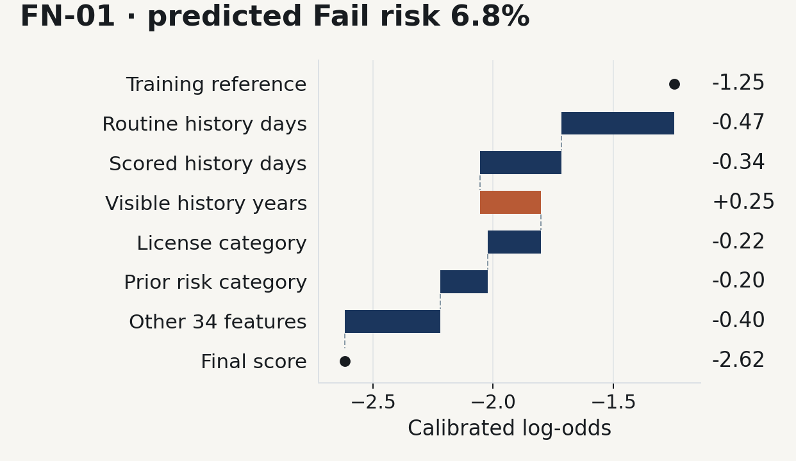
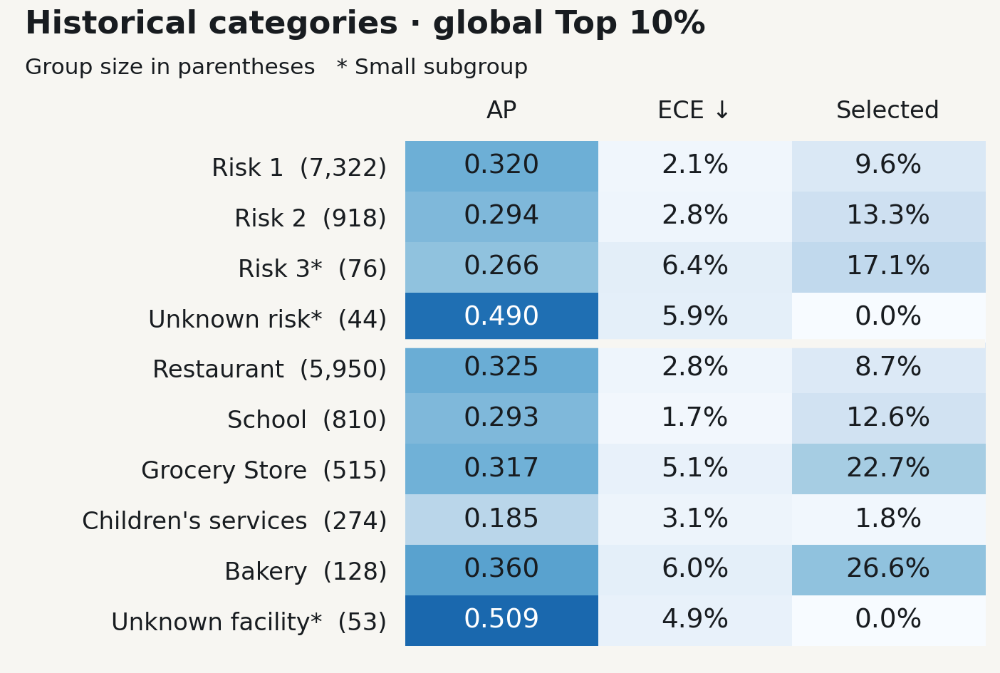

0.633
ROC-AUC
Held-out ranking
Prioritizing routine inspections with auditable risk estimates
PUBLIC RECORDS
Food inspections and business licenses
RESEARCH QUESTION
Which routine visits should receive priority?
One primary model, one held-out test set, and explicit operating limits
0.633
Held-out ranking
0.315
Non-interpolated AP
0.169
Calibrated probability loss
+59.2%
Relative to equal-capacity random
All headline metrics use the primary LR. LightGBM test AP: 0.321; selection stays with the validation winner.
New food-code era, separate temporal evaluation, and no inspector or sanitarian-cluster inputs. Historical labels can still carry bias.
Use higher scores to prioritize visits. Every lower-scoring establishment remains subject to routine coverage and inspection requirements.
Monthly profiles use 2019–2025; Complaint provides an observational comparison

2018-07-01 separates rule eras. Earlier records inform history; post-change targets define model development.
License plus normalized address: 79.7%. Point-in-time visible license history: 79.6%.
Canvass monthly Fail: 20.6%–27.4%. Complaint: 33.2%–41.1%. Both peak in Aug; these are descriptive patterns.
Every target is scored with earlier history at its actual inspection date
2019–2022
27,396 targets
24.7% Fail
Fit preprocessing and estimators
2023
7,277 targets
27.6% Fail
Select parameters and model
2024
8,590 targets
23.2% Fail
Fit the positive-slope sigmoid
2025
8,363 targets
22.6% Fail
Evaluate and explain once
Use records ≥1 day before scoring; collapse same-day history.
Current results, violations, identifiers and current event attributes stay outside the model.
Issue date and term start enforce the declared history cutoff and scoring date.
Preprocessing learns only from training. Test outcomes never select or recalibrate the model.
Added feature groups do not automatically improve test AP
13 fields
Failure days, recent failure rates, and last observed results.
14 fields
Scored days, time since inspection, observed history and scoring month.
10 fields
Visible tenure, recorded terms, issue timing and application type.
Test AP · independently selected and calibrated LR variants
The original 39-field LR adds facility type and risk: AP 0.3146. This frozen reference is separate from the nested ablations.
2025 held-out test · calibrated model probabilities and heuristic rankings · Top 10% annual priority precision
| Model | ROC-AUC | AP | Brier ↓ | Log loss ↓ | Annual priority precision |
|---|---|---|---|---|---|
| Base rate | 0.500 | 0.226 | 0.175 | 0.534 | 22.6% |
| Rule B · Fail rate | 0.583 | 0.283 | — | — | 31.6% |
| Logistic regressionPrimary · Selected on 2023 Val | 0.633 | 0.315 | 0.169 | 0.515 | 36.2% |
| LightGBM | 0.636 | 0.321 | 0.168 | 0.515 | 37.9% |
Three rules tested; Rule B has the highest test AP. Ties use exact expected yield.

LightGBM − LR: +0.0069; interval [−0.0034, +0.0164]. The test gap remains uncertain.
Validation AP: LR 0.3788; LightGBM 0.3781. LR combines failure history with inspection cadence, improving ranking and daily yield beyond single-signal rules.
Calibrators fit in 2024 and are evaluated in 2025

PRIMARY LR
0.1695 → 0.1685
Brier score before → after
Mean risk: 24.7% → 23.0%
LIGHTGBM
45.0% → 22.7%
Observed Fail: 22.6%
Brier: 0.2208 → 0.1681
Positive-slope calibration preserves priority order.
Priority yield is conditional on the visits that actually occurred each day

DAILY Top 10%
+59.2%
Same day, same 948 total slots
Rounding selects 11.3% of targets; captures 18.1% of all Fail.
Average +5.95 days earlier across 6 fixed two-month windows; 38.1% of Fail visits move later.
Retrospective only: labels may change with the date, and actual-date inputs may not exist on a simulated earlier date.
Primary LR · contributions in calibrated log-odds · 39 fields in four semantic groups


Sum signed effects within each business group to make offsetting terms explicit. Groups can still offset one another.
Modern numeric and historical cluster ORs have different units and labels. This study has no sanitarian inputs.
Extreme anonymous examples · largest five drivers plus the signed remainder


of FN last recorded Pass
of FN had no inspection history
of FP were Pass w/ Conditions
Conditions count as Non-Fail in the target label. These cases explain scores; they do not establish on-site causes.
Risk tiers and major facility types receive the same global selection policy

One global 837-slot allocation; groups are based on previously visible attributes.
| Dimension | This study | CDPH 2015 | Kannan 2019 |
|---|---|---|---|
| Study era | 2019–2025 | Earlier model | Earlier-model audit |
| Rule / label | New code Routine Fail | Old code Critical violations | Old code Critical violations |
| Inspector inputs | Excluded | Included | Bias examined |
| Evaluation | Temporal AP, calibration, slices | Calendar-slot reordering | Coefficients, seasonality, comparison |
| Boundary | Retrospective reference | Simulated priority | No causal deployment proof |
Excluding inspector inputs does not eliminate bias in labels or proxies. Subgroup slices describe disparities, not a fairness certificate.
Event-time filtering is verified; historical publication times cannot be reconstructed
| History lag | AP | Δ AP | Priority weight retained |
|---|---|---|---|
| 1 day | 0.3146 | +0.0000 | 100.0% |
| 7 days | 0.3142 | −0.0003 | 98.9% |
| 30 days | 0.3139 | −0.0006 | 96.2% |
Largest individual probability change under a 30 days history lag
The model, preprocessing and calibration remain fixed. Aggregate AP stability does not imply stable individual priorities.
PUBLICATION HISTORY IS MISSING
The city backfilled additional license addresses on 2025-09-25.
An earlier license issue date cannot establish when the enriched address became available.
Preserve the frozen study while collecting evidence for operational decisions
01
Archive candidate pools, public data versions, scores and human overrides before outcomes arrive.
02
Preserve routine coverage and random exploration. Compare yield, waiting time and subgroup coverage.
03
Explore historical violation text and 311 complaint signals after checking publication timing and coverage.
python scripts/reproduce.pyEdit the HTML source file to change slide content.
Current slide